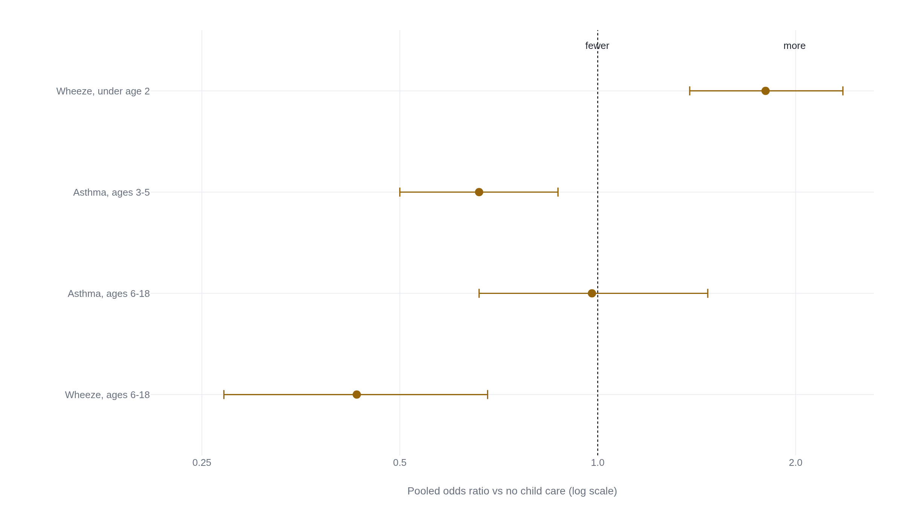

The daycare research settles the infection months and little else
The well-known finding that early daycare guards against later asthma does not survive the cohorts large enough to test it, and what stays firm is a two-year run of extra colds and ear infections.
How much weight the daycare evidence bears
The child turns six months old this August, the age at which many households go back to work and weigh group daycare against care at home. Group care changes one thing at once, and measurably: how many other children a baby breathes near all day, and so how many infections reach the baby in the first years. A Quebec cohort that followed children by care setting found that those who began large group child care early had more respiratory infections at ages 1.5 to 2.5 than home-reared children, an adjusted incidence rate ratio of 1.61. By ages 5 to 8 those same children had fewer, a rate ratio of 0.79.1 For every ten respiratory infections a home-reared toddler collects in that first window, a group-care toddler collects about sixteen. By school age the tally has crossed the other way.
Whether group care changes anything after the infections is where the evidence thins from firm to contested to barely readable. And one limit sits over all of it. You cannot assign babies to daycare or to home at random, so no randomized trial exists for any of these questions in the general population. Every figure here comes from watching families who chose one arrangement or the other, and those families differ: in income, in how many older children are already at home, in how long they breastfeed. That difference is the ceiling on every claim below, and it presses hardest where the measured effect is smallest.
The infection months front-load, then reverse
The firm part of the daycare story is the run of early illness, and it has a clean shape: the same children who catch more infections in the first year or two of care catch fewer once they reach school age. The excess does not accumulate. It arrives early and then reverses.
| Outcome | Early | Later | Cohort |
|---|---|---|---|
| Respiratory infections | 1.61 | 0.79 | Côté, Quebec |
| Ear infections | 1.62 | 0.57 | Côté, Quebec |
| Respiratory and ear episodes | 1.40 | 0.85 | de Hoog, Dutch |
The ear-infection row reverses hardest. By ages 5 to 8 the group-care child has about six ear infections for every ten a home-reared child has, a rate ratio of 0.57, after running well above during the toddler years.1 The Dutch WHISTLER cohort measured the same arc for combined respiratory and ear episodes, up at ages 0 to 1 and down by 5 to 6.2
The stomach-illness half of the near-term claim is smaller than its reputation. Older review articles call daycare a near-certain cause of much more gastrointestinal illness, citing something like three times the diarrheal rate, but those figures come from cross-sectional and clinic-based counts. The prospective cohort built to measure it found a first-year increase of thirteen percent, a rate ratio of 1.13, not a threefold one. It found no net excess across six years either: 12.2 primary-care gastroenteritis episodes per 100 child-years for attendees against 13.3 for non-attendees, a gap narrower than the wobble between two ordinary years.3 The Quebec cohort found no significant gastrointestinal effect at any age.1 The honest near-term claim is more respiratory and ear infections early, narrowing later. The stomach bugs arrive sooner but do not add up to more.
One caveat sharpens the reassurance rather than dissolving it. In the Dutch cohort the infection episodes themselves largely offset over six years, a cumulative rate ratio of 1.08 that was not significant, but the medical use they generated did not fully even out. General-practice consultations stayed slightly raised over the six years, a rate ratio of 1.15, and specialist referrals stayed raised, a hazard ratio of 1.43. The excess was clearest in the children who entered care between six and twelve months of age, whose referral hazard ratio was 1.89.2 For a six-month-old starting now, the tidy "it all evens out" reading holds for infection counts more cleanly than for trips to the doctor.
The asthma protection does not survive the bigger cohorts
The reassuring idea that early daycare guards a child against asthma has a real origin and a strong first result. The Tucson Children's Respiratory Study followed 1,035 children. It found that daycare in the first six months of life was associated with less asthma later, an adjusted relative risk of 0.4. Each additional older sibling carried a similar reduction, a relative risk of 0.8. More exposure to other children predicted more frequent wheeze at age 2, a relative risk of 1.4, and less frequent wheeze from age 6, 0.8, through age 13, 0.3.4 That single arc, more wheeze early and less asthma later, is where the "early exposure trains the immune system" reading comes from, and taken on its own it is persuasive: the sign change over eleven years is hard to explain away.
The strongest version of the skeptical case is not that this study is wrong but that it is one study, and a fragile one at its key figure. The asthma relative risk of 0.4 had a confidence interval whose upper bound touched 1.0, so the data are consistent with no protection at the edge. On a contested question, a single striking cohort is weak footing, because a literature this large holds a supportive result for almost any belief. The larger cohort and the pooled review are the honest test. Both go the other way. The Dutch PIAMA cohort followed 3,963 children to age 8. Early daycare gave them more wheeze in the first years and less between 4 and 8, the same timing arc as Tucson. But at age 8 it offered no protection against asthma, an adjusted odds ratio of 0.99. The odds ratios for allergic sensitization, 0.86, and for airway hyperresponsiveness, 0.80, were no more protective.5 An odds ratio of 0.99 is a coin's worth of difference from no effect at all.

A meta-analysis of 32 studies puts the pattern in one picture. Pooled across those cohorts, early care protects against asthma only in the narrow window of ages 3 to 5, an odds ratio of 0.66, and the protection is gone by ages 6 to 18, 0.98 and not significant. The wheeze effect flips sign with age, from an odds ratio of 1.80 under age 2 to 0.43 at ages 6 to 18. Attending child care at any age carried a small net increase in asthma odds across the whole range from 0 to 18, an odds ratio of 1.17, with high heterogeneity between studies.6 What replicates across the cohorts is the wheeze timing shift, the same children wheezing more as toddlers and less as schoolchildren, not a durable change in whether they end up with asthma. The immune-training story Tucson proposed is the part that did not hold. And every study in this section is observational, so none of it can rule out that the families who select into early care differ from those who do not.
The developmental effects are small, and the design cannot separate care from family
The developmental question is where study design bites hardest, and the largest data set is the NICHD Study of Early Child Care, which followed more than a thousand children from infancy onward. Through sixth grade it found two things. Higher-quality care predicted higher vocabulary scores, and more time in center-based care predicted more teacher-reported acting-out behavior. Parenting was a stronger and more consistent predictor of how children turned out than any measure of their child care, and the child-care effects were small on their own.7 By the end of high school, around age 18, the quality thread persisted. The quality effect on cognitive and academic skills held at a standardized effect size of 0.08 to 0.16, small but real and not faded.8
A standardized effect of 0.10 is worth picturing before it is worth worrying over. On a test scaled like an IQ score, it is about a point and a half, the size of gap that disappears between two ordinary classrooms and is smaller than the swing a single child shows from one testing day to the next. The effect is statistically detectable and genuinely persistent. It is also tiny.
The same numbers support two readings, and the record does not let either win outright. The worrying reading is that the extra acting-out that tracked with hours in center-based care through sixth grade was measured rather than modeled away, and that the quality gap on cognition held all the way to the end of high school. The reassuring reading is that the effects are a tenth of a standard deviation, that parenting predicts far more, and that no randomized trial rules out the simplest explanation. That explanation is selection: the families who put a child in more center-based care may differ from those who do not.
No study in any of these three tiers randomized children to care or home, because none could. Every effect is measured on families who chose their arrangement, and the study authors adjust for income, siblings, breastfeeding, and provider quality but cannot close the gap between the choosers and the rest. That is why a small measured effect and a real causal one cannot be told apart here, and why the developmental numbers carry the least weight of the three.8
What to act on, what to leave to a pediatrician
Put the three tiers on one axis: does the finding change whether or when to enroll? Only one clears that bar. The infection months are real and worth planning for. A baby entering group care will run through more colds and ear infections across the first year or two, heaviest for an entrant between six and twelve months, and then the rate reverses. The counts largely rearrange in time rather than pile up, though the trips to the doctor may stay a little elevated.2 The asthma and allergy tier moves the decision in neither direction. The protection parents are promised does not hold past the preschool years, and the wheeze changes in timing, not in total.6 The developmental tier is too small and too confounded to weigh against a commute or a waitlist. If it points to anything actionable, it is to prefer a higher-quality room where the choice exists, since quality is the one lever with a measured upside, even a slight one.8
The daycare research changes this decision far less than its reputation suggests. The one firm, decision-relevant effect is a time-limited run of respiratory and ear infections that reverses by school age. On the evidence that exists, the choice comes down to family logistics and the quality of the specific room, not to a lasting health verdict. What would change this reading is a randomized trial, which no one can run, or a cohort that separates the care from the families who select it, which no one has built.6
What a household can actually do about the infection months is narrow and specific. The American Academy of Pediatrics recommends hand decontamination with alcohol-based rubs or soap and water around sick children, and exclusive breastfeeding for at least six months to cut the morbidity of respiratory infections. Its prevention advice names hand hygiene, avoiding tobacco smoke, and breastfeeding; it does not name group care as a risk factor to be avoided.9
The one place the daycare decision stops being a research question and becomes a medical one is the higher-risk infant. The same pediatric guideline flags babies under twelve weeks old, born premature, or living with cardiopulmonary disease or immunodeficiency as at elevated risk of severe respiratory disease.9 For that child, the timing of group care is a conversation with a pediatrician and not a verdict this desk can supply. No accessible pediatric guideline issues a blanket instruction to keep high-risk infants out of daycare during respiratory syncytial virus (RSV) season, and the individual call belongs with the clinician who knows the child.
Sources
- JAMA Pediatrics · Côté et al., child-care setting and the course of childhood infections (2010)
- BMC Medicine · de Hoog et al., daycare and respiratory-infection healthcare use (2014)
- Pediatrics · Hullegie et al., first-year daycare and incidence of acute gastroenteritis (2016)
- New England Journal of Medicine · Ball et al., siblings, daycare, and the risk of asthma and wheezing (2000)
- American Journal of Respiratory and Critical Care Medicine · Caudri et al., PIAMA, early daycare and age-8 asthma (2009)
- Journal of Asthma · Swartz et al., child care and childhood asthma and wheeze, meta-analysis of 32 studies (2019)
- Child Development · Belsky et al., NICHD early child-care effects through sixth grade (2007)
- Developmental Psychology · Vandell et al., NICHD early child-care functioning at the end of high school (2016)
- Pediatrics · American Academy of Pediatrics, bronchiolitis clinical practice guideline (Ralston et al., 2014)